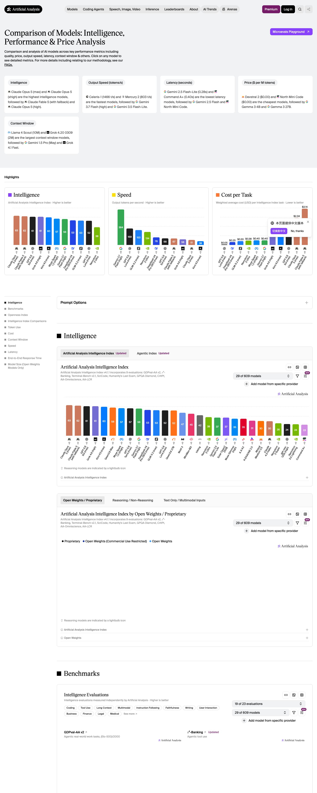

SOURCE PAGERaw comparison material
EXPLORE

19,584 px full page
11 comparison sections
11 views
1 brief
READER'S SEAT OUTPUTSynthesized decision material
DECIDE
All 11 sections synthesized
Snapshot · 18 Aug 2026No model leads quality, price, speed, latency and deployment at once
Six different leaders emerge across six headline dimensions. Use the overall index to shortlist, then select by workload economics, response experience and deployment constraints.
Current dimension leaders
63Intelligence
Claude Opus 5 max and xhigh
60Open-weight IQ
Kimi K3 max
1,466Tokens / sec
Celeris-1
0.28sFirst token
Gemini 2.5 Flash-Lite
$0.02Per 1M tokens
Llama 3.1 8B · blended price
10MContext tokens
Llama 4 Scout
Before deciding: test the relevant benchmark and reliability; compare cost per task and token use; calculate end-to-end response time; then check model size, weight access and license terms.